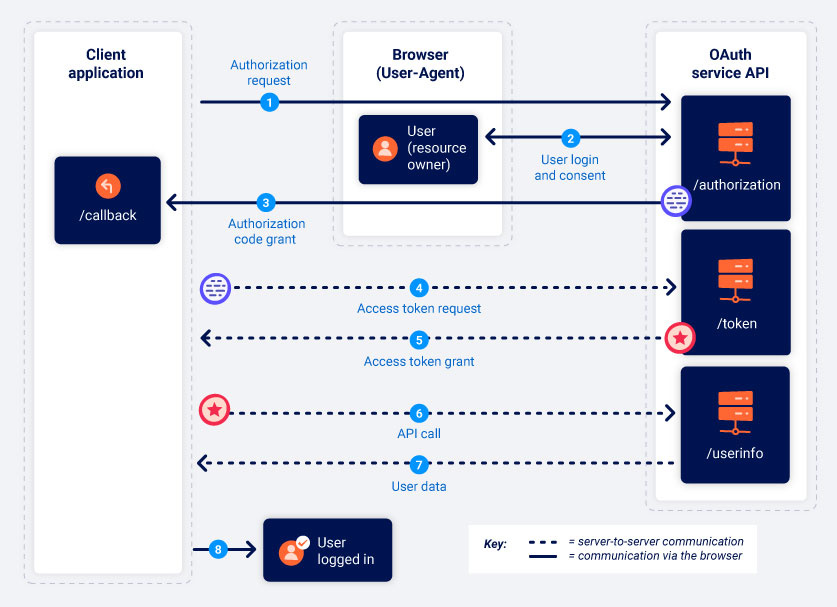

Authorization Code Type
Authorization code grant type• use redirects to exchange series of browser-based HTTP requests that initiate the flow.
1. Authorization Request• /authorization endpoint (doesn't have to be called “authorization” could be “auth”)
• Parameters:
◇ client_id: unique identifer of client app (generated at registration)
◇ redirect_uri: where a user should be redirect to when sending auth code to client app. (Attacks based off exploiting this flaw)
◇ response_type: what respponse client is expecting (what flow it wants to initiate).
code ◇ scope: which subset of user's data to access. (maybe custom scopes or ones standard to OAuth)
◇ state: unique, unguessable value tied to current session of client app. OAuth should return exact value back in response along with auth code. (sort of like a CSRF token)
2. User Login and Consent• User Redirected to login page
• Once user has approved once, this step will be completed automatically.
3. Authorization code grant• User redirected to url specified in redirect_uri parameter.
• Get request will contain authorization code as a query parameter
◇ maybe also the state parameter.
4. Access Token Request• Auhtorization code needs to be exchanged for an access token
• server-to-server POST request to OAuth's /token endpoint.
• All communication from here takes place in secure back-channel (cannot usually be observed / controlled by an attacker)
• Request Parameters:
◇ client_id
◇ redirect_uri
◇ code = auth code?
◇ client_secret = client app authentication (secret key assigned during registration)
◇ grant_type = ensures new endpoints know what type the client wants to use (this case, authorization_code)
5. Acess token grant{
"access_token": "z0y9x8w7v6u5",
"token_type": "Bearer",
"expires_in": 3600,
"scope": "openid profile",
…
}6. API Call• fetch user data from resource server
• API call to /userinfo
• Access token in Authorization: Bearer header.
7. Resource Grant• Token verified (if correct)
8. User is logged in {kind=link}